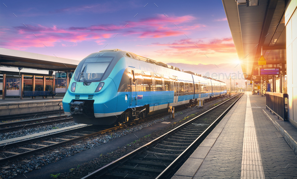

Fuentes de datos
Las fuentes de datos consultadas son las siguientes

Proporciona datos espaciales sobre aeropuertos, estaciones, áreas de servicio, hitos y carreteras
Servidor de transportes IDEE
Proporciona datos espaciales sobre ríos, lagos, estanques, presas, puentes, humedales, nodos hidrográficos y cascadas
Servidor de hidrografía IDEE

Proporciona información espacial acerca del camino de Santiago y procesa los datos necesarios.
Geoserver